Первая Книга Иеу
(Пер. - А. Мома.)
Я возлюбил вас. Я захотел (дать)
вам жизнь. Живой Иисус1,
знающий Истину.
Это - Книга Гнозиса Невидимого Бога2, (которая) посредством
Сокрытых Тайн, указующих путь к Избранному Роду3, через
возрождение (ведет) к жизни Отца - в приход Спасителя, избавителя душ,
которые сами получают Слово Жизни4, которое превыше всей
жизни - в познание живого Иисуса, изошедшего через Отца из Эона Света в
Полноте Плеромы - в учение, вне которого нет иного, которому живой Иисус
обучал своих апостолов, говоря: "Вот - учение, в коем пребывает Цельное
Знание".
Живой Иисус отвечал и говорил ученикам своим: "Благословен тот, кто
распял мир5 и кто не дал миру распять его".
Апостолы же отвечали единогласно, говоря: "О, Господи, научи нас способу
распять этот мир, чтобы не мог он распять нас, ибо мы разрушены и теряем
наши жизни".
Живой Иисус отвечал: "Тот, который распял (этот мир) - это тот, кто
нашел Слово мое и исполнил его согласно воле Пославшего меня6".
2.
Апостолы отвечали, говоря: "Говори же нам, Господи, чтобы могли мы слышать
тебя. Мы всем сердцем следуем за тобою. Мы оставили и отца, и мать, мы
оставили виноградники и поля, мы оставили добро и величие царей, и мы следовали
за тобою7, чтобы ты смог обучить нас познанию жизни твоего
Отца, пославшего тебя8".
Живой Иисус ответил и сказал: (2) "Жизнь Отца моего такова: чтобы получили
вы душу вашу от Рода Понимающего (Разума), и чтобы он прекратил быть земным
и стал понимающим через то, что я сказал вам по ходу моего объяснения,
чтобы вы исполняли его и спаслись от Архонта этого Эона и его преследований,
которым нет конца. Но вы, ученики мои, торопитесь же получить слово мое
с уверенностью, чтобы познать его, чтобы с вами не смог бороться Архонт
этого Эона9 - тот, который не нашел никакой заповеди
его во мне10 - чтобы вы также, апостолы мои, исполнили
слово мое по отношению ко мне. А я сделал бы вас свободными, и вы стали
бы цельными через свободу, в которой нет пятна. Как Дух-Утешитель11
(Параклет) целостен, также и вы станете целостными через Свободу Духа Святого,
Утешителя".
3.
Все апостолы - Матфей, и Иоанн, и Филипп, и Варфоломей, и Иаков, единогласно
отвечали, говоря: "Господи Иисусе, ты, живейший, чье добро простирается
над обнаружившими Мудрость твою и Форму твою, в которой ты воздаешь Свет;
о, Свет, Воздающий Свет, просвещавший наши сердца до тех пор, пока мы не
стяжали Свет Жизни; о, Истинное Слово, учащее нас через Гнозис сокрытому
знанию Господа Иисуса Живого".
Живой Иисус отвечал (3) и сказал: "Благословен человек, познавший всё
это. Он низверг Небеса, поднял Землю и (отправил ее) на Небеса, и она стала
Серединой, ибо она - ничто".
Апостолы отвечали, говоря: "О, Иисус Живой, Господь (наш), истолкуй
же нам, как можем мы низвергнуть Небеса, ведь мы следовали за тобой, чтобы
ты мог обучить нас Свету Истинному".
Живой Иисус отвечал и сказал: "Слово, сущее на Небесах прежде Земли,
начало быть - то, которое названо Миром - но вы, когда познаете слово мое,
низвергнете Небеса, и они станут обитать в вас. Небеса - Невидимое Слово
Отца; но когда вы познаете всё это, вы низвергнете Небеса. Чтобы поднять
Землю до Небес, я покажу вам, что она такое, чтобы вы могли познать ее:
отправить Землю на Небеса - это значит, что слышащий Слово Гнозиса перестал
иметь Понимающий Разум приземленного человека земли, но стал Человеком
Небес. Его Понимающий Разум перестал быть земным, но стал небесным. В силу
этого вы и будете спасены от Архонта этого Эона, и он станет Серединой,
ибо он - ничто".
Снова сказал Живой Иисус: "Когда вы станете Небесными, вы станете Серединой,
поскольку она - ничто, ибо [...] Правители (Архэ) и Проклятые Силы (Экзоусиаи)
станут вами и они станут завидовать вам, потому что вы познали меня, ибо
я не от мира сего12, и я не похож на Правителей, и на
Силы, и на всех Проклятых. (4) Они не исходят от меня. И, кроме того, тот,
кто (рожден) во плоти неправедности, не пребывает в Царстве Отца моего,
а еще тот, кто связан с плотью, не верует (в) Царство Бога-Отца".
4.
[Апостолы] же единогласно отвечали, они сказали: "Иисус, [Живой] Господь,
рождены ли мы от плоти и познали ли тебя согласно плоти? Скажи же нам,
о Господи, ибо встревожены мы".
Живой Иисус отвечал и сказал своим апостолам: "Я не говорю от плоти,
в которой [вы] пребываете, но плоть [неведения] и непонимания существуют
в неведении, вводящим в заблуждение многих, уводя от [слова] Отца моего".
Апостолы же отвечали на слова Живого Иисуса, говоря: "Скажи же нам,
как случается непонимание, чтобы мы могли уберечься от него [...]".
Живой Иисус отвечал и сказал: "Тот, кто носит невинность мою и мой
[...] и одеяние мое13, не понимая и [не зная] меня, кощунствуя
над именем моим, я [...] на разрушение. И, кроме того, стал он Земным Сыном,
потому что не постиг он слово мое с уверенностью - те [слова], которые
говорил Отец, чтобы сам я мог учить тех, кто познает меня в полноте Плеромы
Пославшего меня".
Апостолы [ответили] и сказали: "О, Господи, Иисус Живой, научи же нас
Полноте, и ее (будет) достаточно нам". И он сказал: "Вот Слово, которое
я дал вам самим: ...
(примерно 2 строки не читаются)...
(1а)
|
Я возлюбил вас.
Я хотел (дать) вам жизнь.
Живой Иисус, знающий Истину.
|
Это - Книга Гнозиса Невидимого Бога, посредством Сокрытых Тайн указующих
путь Избранному Роду, (ведущая) в отдохновение, в Жизнь Отца через явление
Иисуса, избавителя душ, стяжавших себе сие Слово Жизни, которое превыше
всякой жизни, в Гнозис Живого Иисуса, изошедшего по воле Отца из Эона Света
как Совершенство Плеромы, в учение, вне которого нет иного учения, преподанное
Живым Иисусом ученикам своим с такими словами: "Это - учение, в котором
обитает Цельный Гнозис".
Живой Иисус ответил и сказал своим ученикам: "Блажен тот, кто распял
мир и не дал миру распять себя".
Ученики же в один голос отвечали, говоря: "Господи, научи нас способу
распятия мира, дабы он не распял нас, ибо мы порушили и утеряли жизни наши".
Живой Иисус отвечал: "Распявший мир суть обретший слово мое и исполнивший
его по воле Пославшего меня".
(2а)Апостолы же отвечали, говоря: "Скажи нам, Господи, что мы (уже)
можем слушать тебя. Мы следовали тебе всем сердцем нашим. Мы оставили отца
и мать, мы оставили виноградники и поля, мы оставили богатства и величие
царей и следовали за тобою, дабы обучил ты нас жизни Отца твоего, пославшего
тебя."
Живой Иисус отвечал и сказал: "Жизнь Отца моего такова: чтобы вам стяжать
душу свою из Рода Понимающего (Разума), и чтобы она перестала быть земной
и сделалась понимающей, о чем я расскажу вам во время объяснения моего,
чтобы вы наполнили ее и спаслись от Архонта сего Эона и кар его, коим несть
числа. Но вы, ученики мои, немедля спешите стяжать слово мое, дабы знать
его, дабы Архонт Эона сего не поборол вас - он, не нашедший во мне ни одной
из своих заповедей - чтобы вы также, апостолы мои, исполнили слово мое
в отношении меня, и я сам сделал бы вас свободными, и вы сделались бы цельными
через свободу, в коей нет изъяна. Как целен Дух-Утешитель, также и вы станете
цельными через свободу Духа от Святого Утешителя."
(3а)Все апостолы - Матфей и Иоанн, Филипп, Варфоломей и Иаков в один
голос ответствовали, говоря: "О, Господи Иисусе Живой, твое благо простирается
над отыскавшими мудрость твою в образе твоем, в коем ты явил свет, о, Свет,
Дающий Свет, просветлявший сердца наши пока не стяжали мы Свет Жизни, о,
Слово Истины, гнозисом обучавшее нас Сокрытому Знанию Господа, Иисуса Живого."
Ответил Живой Иисус и сказал: "Блажен же познавший всё это". (4а) Он
(т.е. познавший) раздвинул Небеса, поднял землю и отправил ее в Небеса,
и он сделался Серединой, ибо это ничто."
Апостолы же отвечали, говоря: Иисус Живой, Господь (Наш), истолкуй
нам, как можем мы опустить Небеса, ведь мы следовали за тобой, дабы ты
научил нас Свету Истины.
Живой Иисус ответил и сказал: "Это Слово, бывшее в Небесах прежде,
чем начала быть земля - то есть то, что зовется миром сим - вы же, познавая
Слово мое, опустите Небеса, а оно поселится в вас. Небеса же эти суть Невидимое
Слово Отца, но когда вы познаете всё это, вы опустите Небеса. Что же касается
подъема земли в Небеса, то я покажу вам, что это такое, чтобы вы знали
это. Отправить землю на небо означает, что слышащий слово гнозиса перестал
пользоваться пониманием земного человека, но сделался Небесным Человеком.
Его Понимающий (Разум) перестал быть земным, но стал небесным. Из-за ...
(Примерно 1 строка не читается)...
5.
(5)Он эманировал его, существо такого Типа: |..........................|.
Это - Бог Истины. Он поставит его в данном Типе как Главу14.
Он будет назван Иеу15. Впоследствии мой Отец сдвинет
его, чтобы эманировать прочие Эманации, чтобы они заполняли эти Места.
Вот - Имя его, согласно Сокровищам16, которые вне его.
Он будет назван таким Именем: ιοειαωθωυιχωλμιω, то есть: "Бог Истины".
Он поставит его в этом Типе как Главу над Сокровищами, которые вне его.
Вот - Тип Сокровищ, над которым он поставит его как Главу, и это - способ,
которым распределены Сокровища, он же - их Глава. Вот - Тип, в котором
он был прежде, чем его сместили, чтобы эманировать Эманации (рис. 01):
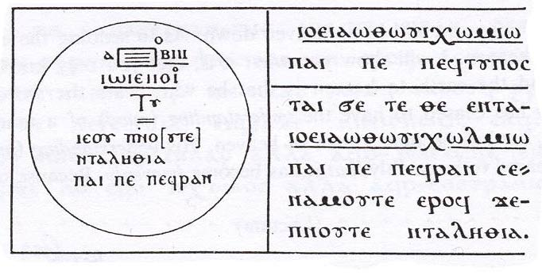
Более того, он будет назван Иеу. Он будет Отцом Множества Эманаций.
И множество Эманаций изойдет из него по велению Отца моего, и сами они
станут Отцами Сокровищ.
(6)Я помещу Множества в качестве Глав над ними, и они будут названы
Иеу, Богом Истины. Именно он будет Отцом Всех Иеу, потому что он - Эманация
Отца моего. И Бог Истины эманирует по приказу Отца моего. Он станет Главою
над ними. Он сдвинет их, и Множество Эманаций изойдут из всех Иеу по велению
Отца моего, когда он сдвинет их, и они заполнят все Сокровища. И они будут
названы Чинами Сокровищ Света. Мириады и Мириады начнут быть от них.
Вот таков Тип, в котором основан Бог Истины, когда он вновь поставлен
Главою над Сокровищами прежде, чем он выделил Эманации над Сокровищами
и прежде, чем он выделил Эманации, потому что Отец мой еще не сместил его,
чтобы эманировать и восставлять (сущности). Вот - его Тип, который я уже
растолковал (вам), но он будет его Типом, когда он выделит Эманации. Вот
- Тип Бога Истины в том виде, как он размещен (рис. 02):
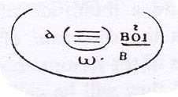
Три Линии, которые здесь, это - Голоса, которые издаст он, когда велят
ему петь осанны Отцу, (7) чтобы Он выделил Эманации, и (чтобы) он также
эманировал. Вот - Тип, от которого он сам (рис. 03):
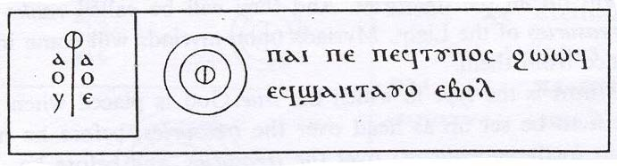
Это, кроме того, тот способ, которым поставлен Бог Истины, так как он
снова выделяет Эманации, когда он сдвинут Отцом моим, чтобы выделить Эманации
и поставить их как Главу над Сокровищами по велению Отца моего. Множество
исходит из них, и они заполняют все Сокровища по велению Отца моего для
того, чтобы стать Богом. Бог Истины будет назван Иеу, Отцом Всех Иеу, имя
его на языке Отца моего таково: ιοειαωθωоυιχωλμιω. Но когда он поставлен
Главою над всеми Сокровищами, чтобы эманировать их, то вот каков Тип его,
о котором я уже всё сказал.
6.
Вот послушайте еще о Типе Сокровищ, как они эманировали. Он станет
Главою над ними таким вот образом, прежде чем эманирует их; вот - его Тип,
как размещен он. Бог Истины же был вот такого Типа (8) (рис. 04):
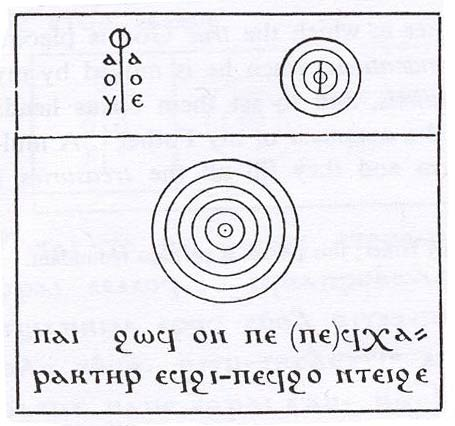
Но я воззвал к имени моего Отца, чтобы он мог сместить Бога
Истины длятого, чтобыэманировать. Но причина - он сам. Это - его
Характер17, чтобы(Малая)Мысльизошла из Сокровищ
его.
Сила же Отца моего сдвинула Бога Истины. Она излучалась внутрь него
через его Малую Мысль18, эманировавшую из Сокровищ Отца
моего. Она (Сила) излучалась внутри Бога Истины.
Тайна же сместила его через Отца моего. Бог Истины дал Глас, так говорящий:
ιε ιε ιε. И когда он подал Глас, изошел Глас, являющийся Эманацией. Он
был этого же Типа, поскольку он выступал и с одной, и с другой стороны
каждого Сокровища.
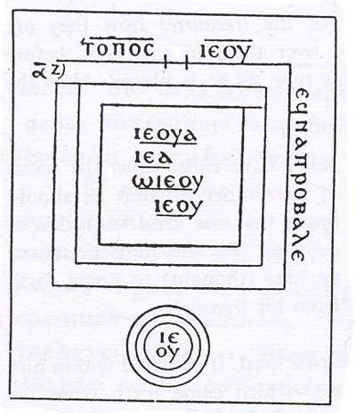
Вот он, Первый Глас (рис. 05), который призвал Иеу, Бог Истины,
(Глас), изошедший из него, свыше. Вот - его Характер.
Он установит Чин, соответствующий Сокровищам и поместит его
вкачестве Смотрителей у Врат Сокровищ19, стоящих
у Врат подобно Трем (Смотрителям)20.
Вот таков Бог Истины. Когда же Бог Истины эманировал, таков был его
Тип (9) (рис. 06):
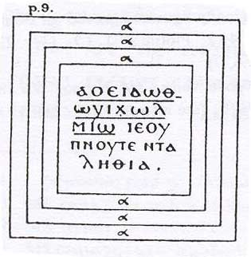
Когда сей Великий обосновался в Сокровищах, Чинов еще не было. Я же
стоял и призывал Имя Отца моего, чтобы побудил Он обитать
в Сокровищах прочие Эманации. Но он снова побудил (Силу) свою сдвинуть
Бога Истины. Вначале он побудил ее излучаться внутрь него, чтобы он смог
переместить свои Эманации в Сокровища, чтобы они также могли выделить Эманации,
которые он поместил над ними в качестве Глав. Но он, Бог Истины, эманировал
их из своего Места. Поэтому он и подал Глас тогда, когда Сила взошла внутрь
него. Вот - Первый Глас, который он изрек. Он сдвигал свои Эманации, пока
они не эманировали:
7.
(рис. 07)
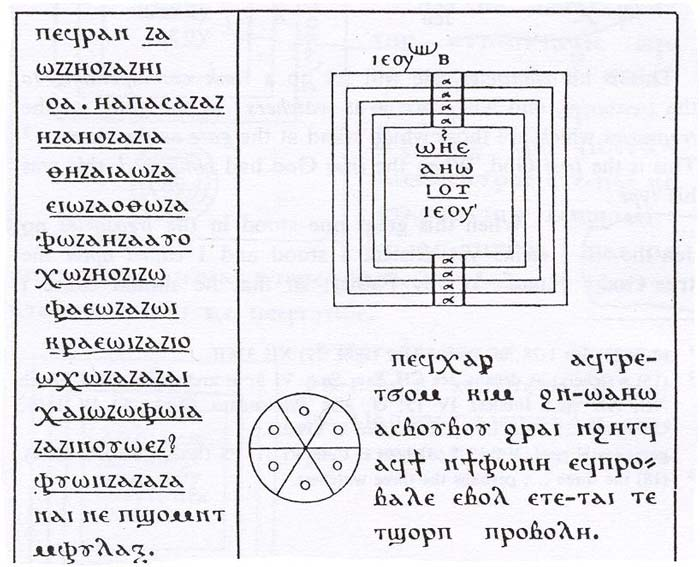
Вот - Чины, которые он побудил эманировать. И вот - Двенадцать Чинов
в каждом Сокровище, они являются их Типом: Шесть Глав по одну сторону и
Шесть по другую, повернутые друг к другу. (10) И будет Множество Чинов,
устанавливаемых в них вне этих, о них обо всех я расскажу. Вот - Двенадцать
Глав в каждом Чине, и Имя, принадлежащее всем им сообразно с Чином. Это
Имя - то же самое, что (у этих) Двенадцати, и всего Двенадцать Глав в каждом
Чине. Вот его Имя: оηαζωζαι.
(рис. 08)
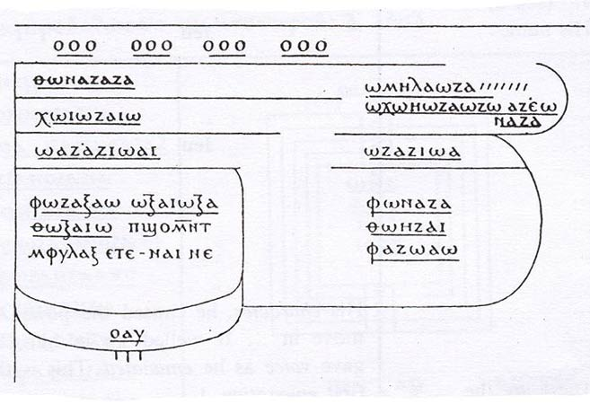
А вот Первый Чин Сокровища является первым, созданным им как Эманация.
Я же возьму себе Двенадцать из этих Чинов и помещу их так, чтобы они служили
мне.
8.
(рис. 09)
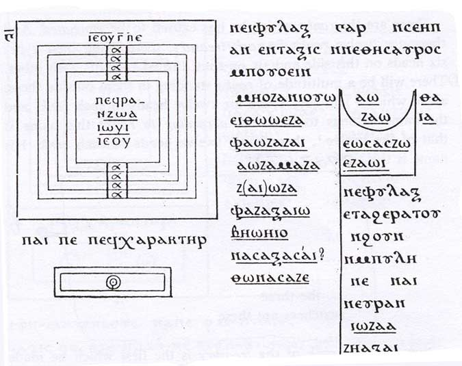
(11)И вот - Двенадцать Глав в каждом Месте Чина каждого Сокровища; то
есть Имена сии, те, что в Местах - эти Имена не включают те(х), которые
пребудут в них.
Вот - Трое Смотрителей: ωζααιω ζоαωρ ωυαφαιω
Y а о
________________________________________________________________
Это они, которых ζωαιωυι эманировал, когда Сила излучалась в него.
Он эманировал Двенадцать Эманаций, и это Имя - то же самое, что и (у)
Двенадцати, согласно каждому из Чинов, и они бесконечно пребывают вне прочих.
Вот - Имена этих Эманаций:
9.
(рис. 10)
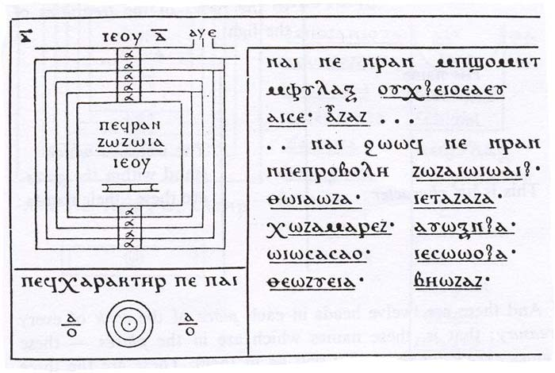
И вот - Двенадцать Глав в Месте Сокровища его Чинов; то есть это - Имена,
которые в каждом Месте. Их Двенадцать в каждом Чине, и это Имя - такое
же, что (у) Двенадцати, не считая тех, что будут в них, когда они будут
петь осанны Отцу моему, чтобы Он дал им Силы Света.
(12)Это - они, которые ζωζωια, эманировал, когда Сила излучилась
в него. Он эманировал Двенадцать Эманаций, и Двенадцать Глав было в каждой
Эманации, и это имя - Двенадцать, согласно каждому из Чинов. И они бесконечно
пребывают вне прочих, за исключением Смотрителей их.
Вот - Имена Трех Смотрителей: ωΔηιωζ оυαιεααιωξ αιω
10.
(рис. 11)
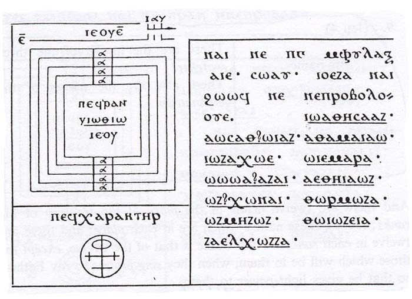
И вот - Двенадцать Глав в каждом Месте Сокровищ его Чинов, то есть это
- Имена, пребывающие в Местах. И их Двенадцать в каждом Чине, и это Имя
- то же, что (у) Двенадцати, не считая тех, которые будут в них, когда
они будут петь осанны Отцу моему, чтобы Он дал им Силу Света.
Вот они, которых ιωθιω эманировал из него, когда сила Отца моего излучалась
в него. Он эманировал Двенадцать Эманаций. (13) И по Двенадцать Глав в
каждой Эманации, и это Имя - то же, что (у) Двенадцати, и их Двенадцать
согласно каждому из Чинов. И они бесконечно пребывают вне прочих, не считая
Смотрителей.
Вот - Трое Смотрителей: ιαωη ιααι εαε
11.
(рис. 12)
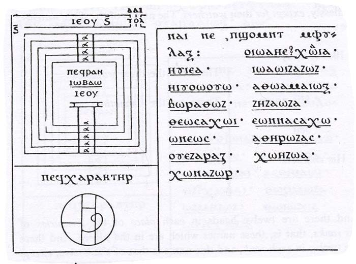
И вот Двенадцать Глав в каждом Сокровище, которые суть его Чины, то
есть те Имена, которые в Местах. И их Двенадцать в каждом Чине, и это Имя
– Имя этих Двенадцати, не считая тех, что пребудут в них, когда они будут
петь хвалы Отцу моему, чтобы Он дал им Силу Света.
Это они, которых ιωβαω эманировал из себя, когда Сила Отца моего излучалась
в него. Он эманировал Двенадцать Эманаций. Вот Двенадцать Глав в каждой
Эманации, и Имя сие – Имя этих Двенадцати. И есть Двенадцать согласно каждому
из Чинов, то есть их, и они бесконечно находятся (одни) за другими, не
считая их Смотрителей Эманаций. Вот - Трое Смотрителей: оυεια θυωεα ωζαι
12.
(14) (рис. 13)
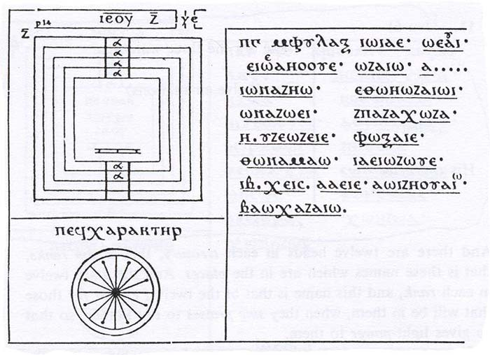
И есть Двенадцать Глав в Сокровище, которые суть его Чины, то есть Имена,
которые в Местах. И вот Двенадцать в каждом Чине, и его Имя – Имя этих
Двенадцати, не считая тех, которые пребудут в них, когда они будут петь
хвалы Отцу моему, чтобы Он дал им Силу Света.
Это они, которых эманировал ξιζυω, когда Сила Отца моего излучалась
в Него. Он эманировал Двенадцать Эманаций. И вот Двенадцать Глав в каждой
Эманации, и Имя сие – Имя этих Двенадцати; и вот – Двенадцать согласно
каждому из Чинов, и они бесконечно пребывают друг за другом. Вот - Имена
Эманаций, не считая их Смотрителей. Вот - Трое Смотрителей: ναζα ιоυεαι εηωικ
13.
(15) (рис. 14)
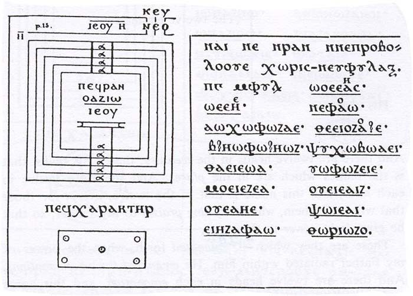
И вот – Двенадцать Глав в его Сокровище, которые суть его Чины, то есть
Имена, которые в Местах. И вот – Двенадцать в каждом Чине, и Имя сие –
Имя этих Двенадцати, не считая тех, которые пребудут в них, когда они будут
петь хвалы Отцу моему, чтобы Он дал им Силу Света.
Вот они, которых эманировал оαζιω, когда Сила Отца моего излучалась
в Него. Он эманировал Двенадцать Эманаций. И вот – Двенадцать Глав в каждой
Эманации, и Имя сие – Имя этих Двенадцати; и вот – Двенадцать согласно
каждому из Чинов, и они бесконечно пребывают друг над другом. Вот Имя Трех
Смотрителей: оαζφυε ωεζηαι
αθακει
14.
(16) (рис. 15)
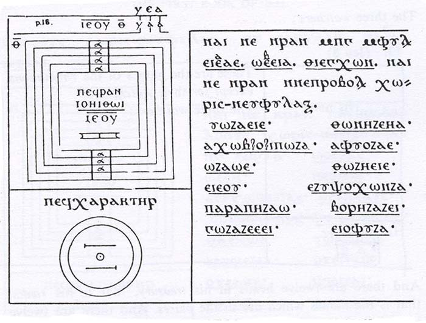
И вот – Двенадцать Глав в каждом Месте, которые суть его Чины, то есть
Имена, которые в Местах. И вот – Двенадцать в каждом Чине, и Имя сие –
Имя этих Двенадцати, не считая тех, которые пребудут в них, когда они будут
петь хвалы Отцу моему, чтобы Он дал им Силу Света.
Вот они, которых эманировал ιоηιθωι, когда Сила Отца моего излучалась
в Него. Он эманировал Двенадцать Эманаций. И вот – Двенадцать Глав в каждой
Эманации, и Имя сие – Имя этих Двенадцати; и вот – Двенадцать согласно
каждому из Чинов, и они бесконечно окружают друг друга. Вот - Трое Смотрителей:
ειζαω ειζαη θωιειλ
15.
(17) (рис. 16)
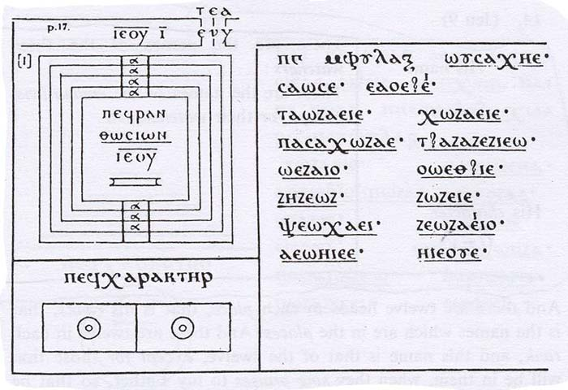
И вот – Двенадцать Глав в каждом Месте, которые суть его Чины, то есть
Имена, которые в Местах. И вот – Двенадцать в каждом Чине, и Имя сие –
Имя этих Двенадцати, не считая тех, которые пребудут в них, когда они будут
петь хвалы Отцу моему, чтобы Он дал им Силу Света.
Вот они, которых эманировал ζιωθαω, когда Сила Отца моего излучалась
в Него. Он эманировал Двенадцать Эманаций. И вот – Двенадцать Глав в каждой
Эманации, и Имя сие – Имя этих Двенадцати; и вот – Двенадцать согласно
каждому из Чинов, и одна бесконечно окружает другую, и вот - их Имена,
не считая их Смотрителей. Вот – Трое Смотрителей: νωωειεα ωνια
αυζειε
16.
(18) (рис. 17)
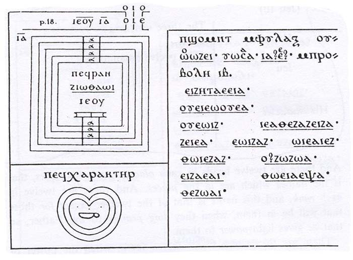
И вот – Двенадцать Глав в его Сокровище, которые суть его Чины; то есть
Имена – это те, которые в Местах. И вот – Двенадцать в каждом Чине, и Имя
сие – Имя этих Двенадцати, не считая тех, которые пребудут в них, когда
они будут петь хвалы Отцу моему, чтобы Он дал им Силу Света.
Это – они, которых эманировал ζιωθαωι, когда Сила Отца моего излучалась
в Него. Он эманировал Двенадцать Эманаций. И вот – Двенадцать Глав в каждой
Эманации, и Имя сие – Имя этих Двенадцати; и вот – Двенадцать согласно
каждому из Чинов, и они бесконечно пребывают друг за другом, и вот - их
Имена, не считая их Смотрителей. Вот – Трое Смотрителей: νωωειεα ωνια αυζειε
17.
(19) (рис. 18)
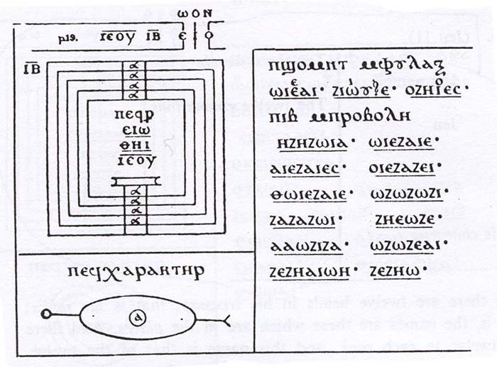
И вот – Двенадцать Глав в его Сокровище, которые суть его Чины, то есть
Имена, которые в Местах. И вот – Двенадцать в каждом Чине, и Имя сие –
Имя этих Двенадцати, не считая тех, которые пребудут в них, когда они будут
петь хвалы Отцу моему, чтобы Он дал им Силу Света.
Это – они, которых эманировал ειωθηι, когда Сила Отца моего излучалась
в Него. Он эманировал Двенадцать Эманаций. И вот – Двенадцать Глав в каждой
Эманации, и Имя сие – Имя этих Двенадцати; и вот – Двенадцать согласно
каждому из Чинов, и они бесконечно пребывают друг за другом, и вот - их
Имена, не считая их Смотрителей. (Вот – Трое Смотрителей:) θρασηλ αζαζα?
ηоιζαζ.
18.
(20) (рис. 19)
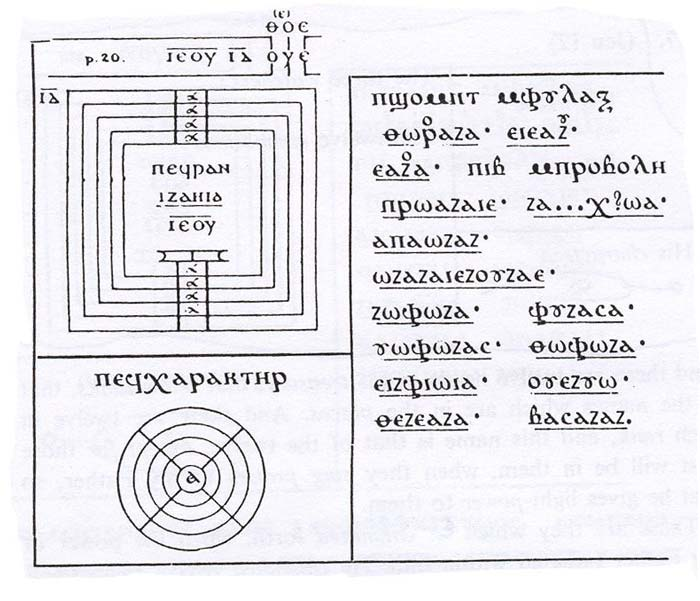
И вот – Двенадцать Глав в его Сокровище, которые суть его Чины; то есть
Имена, которые в Местах. И вот – Двенадцать в каждом Чине, и Имя сие (суть
Имя этих Двенадцати), не считая тех, которые пребудут в них, когда они
будут петь хвалы Отцу моему, чтобы Он дал им Силу Света.
Это – они, которых эманировал ιζαηια, когда Сила Отца моего излучалась
в Него. Он эманировал Двенадцать Эманаций. И вот – Двенадцать Глав в каждой
Эманации, и Имя сие – Имя этих Двенадцати, и вот – Двенадцать согласно
каждому из Чинов, и они бесконечно пребывают друг за другом, и вот - их
Имена, не считая их Смотрителей. Вот – Трое Смотрителей: υωξαι ειξαζα ειεоυε
19.
(21) (рис. 20)
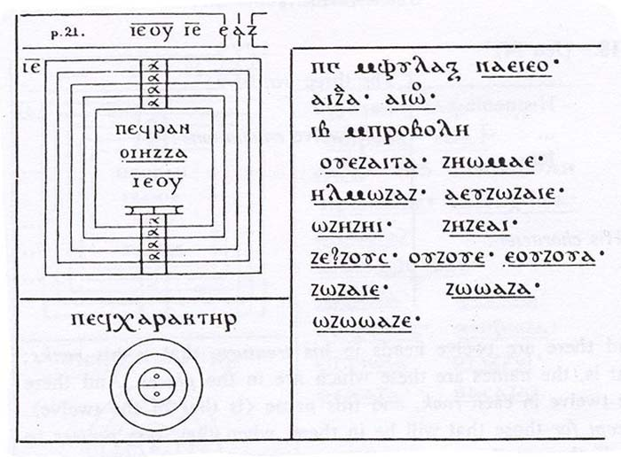
И вот – Двенадцать Глав в его Сокровище, которые суть его Чины; то есть
Имена, которые в Местах. И вот – Двенадцать в каждом Чине, и Имя сие –
Имя этих Двенадцати, не считая тех, которые пребудут в них, когда они будут
петь хвалы Отцу моему, чтобы Он дал им Силу Света.
Это – они, которых эманировал оιηζζα, когда Сила Отца моего излучалась
в него. Он эманировал Двенадцать Эманаций. И вот – Двенадцать Глав в каждой
Эманации, и Имя сие – Имя этих Двенадцати; и вот – Двенадцать согласно
каждому из Чинов, и они бесконечно пребывают друг за другом, и вот - их
Имена, не считая их Смотрителей. Вот – Трое Смотрителей: ναωξαιε ωαζ ειαζει
20.
(22) (рис. 21)
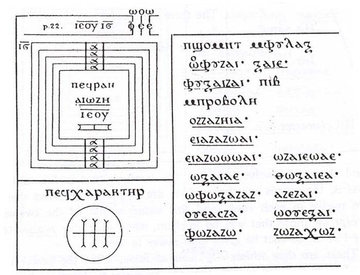
И вот – Двенадцать Глав в каждом Месте его Сокровища; то есть Имена,
которые в Местах. И вот – Двенадцать в каждом Чине, и Имя сие – Имя этих
Двенадцати, не считая тех, которые пребудут в них, когда они будут петь
хвалы Отцу моему, чтобы Он дал им Силу Света.
Это – они, которых эманировал αιωζη, когда Сила Отца моего излучалась
в Него. Он эманировал Двенадцать Эманаций. И вот – Двенадцать Глав в каждой
Эманации, и Имя сие – Имя этих Двенадцати; и вот – Двенадцать согласно
каждому из Чинов, и они бесконечно пребывают друг за другом, и вот - их
Имена, не считая их Смотрителей. Вот – Трое Смотрителей: ωιαξαα αζαζ αζαζη
21.
(23) (рис. 22)
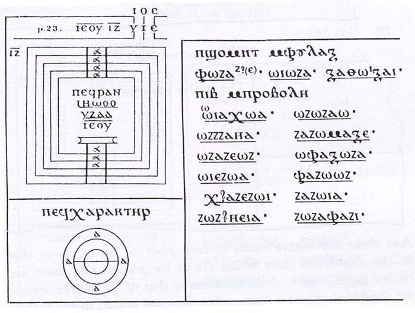
И вот – Двенадцать Глав в его Сокровище, которые суть его Чины; то есть
Имена, которые в Местах. И вот – Двенадцать в каждом Чине, и Имя сие –
Имя этих Двенадцати, не считая тех, которые пребудут в них, когда они будут
петь хвалы Отцу моему, чтобы Он дал им Силу Света.
Это – они, которых эманировал ιηωооυζαα, когда Сила Отца моего излучалась
в Него. Он эманировал Двенадцать Эманаций. И вот – Двенадцать Глав в каждой
Эманации, и Имя сие – Имя этих Двенадцати; и вот – Двенадцать согласно
каждому из Чинов, и они бесконечно пребывают друг за другом, и вот - их
Имена, не считая их Смотрителей. Вот – Трое Смотрителей: ωξ/// αιoυξαι
ζαζαι
22.
(24) (рис. 23)
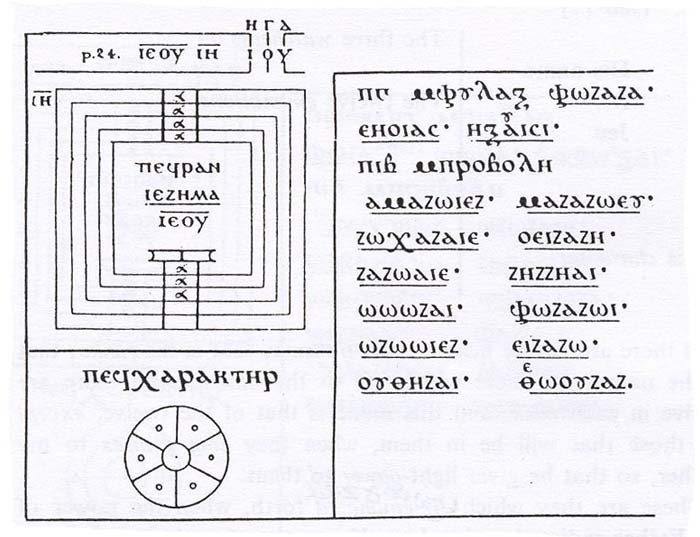
И вот – Двенадцать Глав в его Сокровище, которые суть его Чины; то есть
Имена, которые в Местах. И вот – Двенадцать в каждом Чине, и Имя сие –
Имя этих Двенадцати, не читая тех, которые пребудут в них, когда они будут
петь хвалы Отцу моему, чтобы Он дал им Силу Света.
Это – они, которых эманировал ιεζημα, когда Сила Отца моего излучалась
в Него. Он эманировал Двенадцать Эманаций. И вот – Двенадцать Глав в каждой
Эманации, и Имя сие – Имя этих Двенадцати; и вот – Двенадцать согласно
каждому из Чинов, и они бесконечно пребывают друг за другом, и вот - их
Имена, не считая их Смотрителей. Вот – Трое Смотрителей: oυξαβε εξαζαι αζηξαι
23.
(25) (рис. 24)
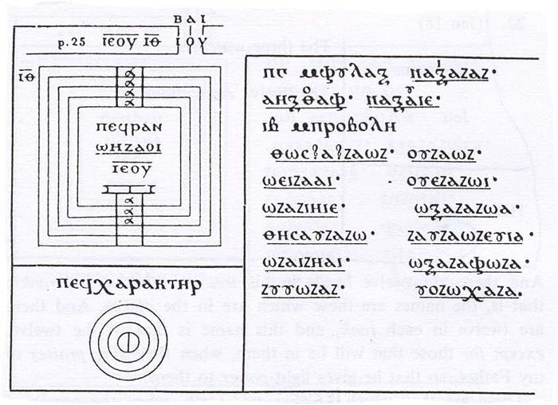
И вот – Двенадцать Глав в его Сокровище, которые суть его Чины; то есть
Имена, которые в Местах. И вот – Двенадцать в каждом Месте, и Имя сие –
Имя этих Двенадцати; не считая тех, которые пребудут в них, когда они будут
петь хвалы Отцу моему, чтобы Он дал им Силу Света.
Это – они, которых эманировал ωηζαоι, когда Сила Отца моего излучалась
в Него. Он эманировал Двенадцать Эманаций. И вот – Двенадцать Глав в каждой
Эманации, и Имя сие – Имя этих Двенадцати; и вот – Двенадцать согласно
каждому из Чинов, и они бесконечно окружают друг друга, и вот - их Имена,
не считая их Смотрителей. Вот – Трое Смотрителей: ωυζαε ευθζαιε ζαιευ
24.
(26) (рис. 25)
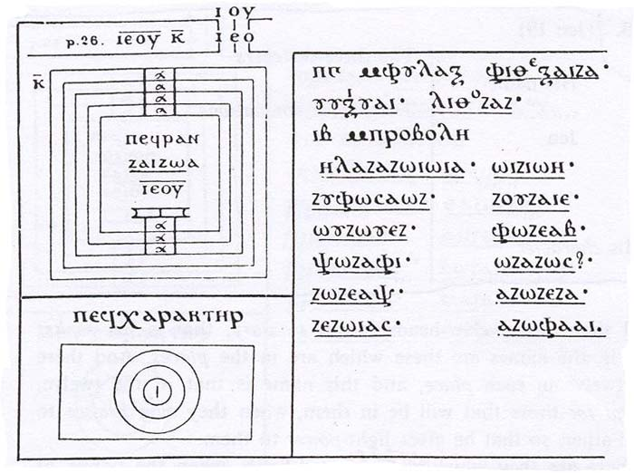
И вот – Двенадцать Глав в (его) Сокровище, которые суть его Чины; то
есть Имена, которые в Местах. И вот – Двенадцать в каждом Чине, и Имя сие
– Имя этих Двенадцати, не считая тех, которые пребудут в них, когда они
будут петь хвалы Отцу моему, чтобы Он дал им Силу Света.
Это – они, которых эманировал ζαιζоα, когда Сила Отца моего излучалась
в него. Он эманировал Двенадцать Эманаций. И вот – Двенадцать Глав в каждой
Эманации, и Имя сие – Имя этих Двенадцати; и вот – Двенадцать в каждом
Чине, являющиеся их Именами, не считая их Смотрителей. Вот – Трое Смотрителей:
щασαε α?ζθωζασ
ιоξα
25.
(27) (рис. 26)
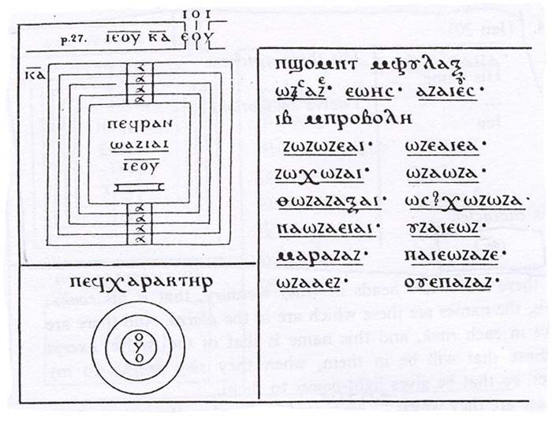
И вот – Двенадцать Глав в его Сокровище, которые суть его Чины; то есть
Имена, которые в Местах. И вот – Двенадцать в каждом Чине, и Имя сие –
Имя этих Двенадцати, не считая тех, которые пребудут в них, когда они будут
петь хвалы Отцу моему, чтобы Он дал им Силу Света.
Это – они, которых эманировал ωαζιαι, когда Сила Отца моего излучалась
в него. Он эманировал Двенадцать Эманаций. И вот – Двенадцать Глав в каждой
Эманации, и Имя сие – Имя этих Двенадцати; и вот – Двенадцать в каждом
Чине, и они бесконечно пребывают друг за другом, и вот - их Имена, не считая
их Смотрителей. Вот – Трое Смотрителей: ιζωι ζωιξα ιεоζθЧ
26.
(28) (рис. 27)
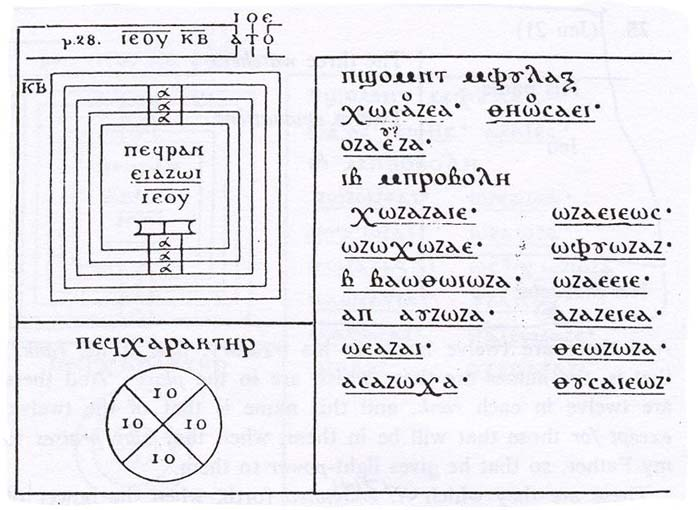
И вот – Двенадцать Глав в его Сокровище, которые суть его Чины; то есть
Имена, которые в Местах. И вот – Двенадцать в каждом Чине, и Имя сие –
Имя этих Двенадцати, не считая тех, которые пребудут в них, когда они будут
петь хвалы Отцу моему, чтобы Он дал им Силу Света.
Это – они, которых эманировал ειαωι, когда Сила Отца моего излучалась
в него. Он эманировал Двенадцать Эманаций. И вот – Двенадцать Глав в каждой
Эманации, и Имя сие – Имя этих Двенадцати; и вот – Двенадцать в каждом
из Чинов, и они бесконечно окружают друг друга, и вот - их Имена, не считая
их Смотрителей. Вот – Трое Смотрителей: ιεααιε θωζαξαφα ωζσαξε
27.
(29) (рис. 28)
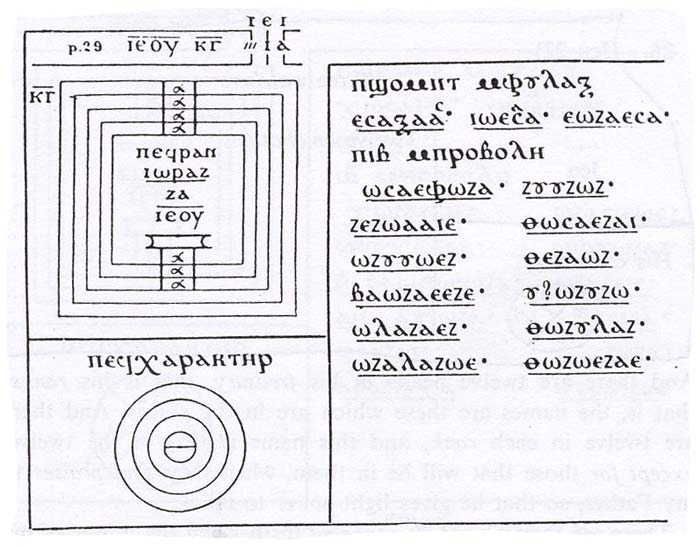
И вот – Двенадцать Глав в его Сокровище, то есть Имена, которые суть
его Чины. И вот – Двенадцать в каждом Чине, и Имя сие – Имя этих Двенадцати,
не считая тех, которые пребудут в них, когда они будут петь хвалы Отцу
моему, чтобы Он дал им Силу Света.
Это – они, которых эманировал ιωραζζω, когда Сила Отца моего излучалась
в него. Он эманировал Двенадцать Эманаций. И вот – Двенадцать Глав в каждой
Эманации, и Имя сие – Имя этих Двенадцати; и вот – Двенадцать в каждом
из чинов, являющиеся их Именами, не считая их Смотрителей. Вот – Трое Смотрителей:
ωσα εζθε σαωσαεσ
28.
(30) (рис. 29)
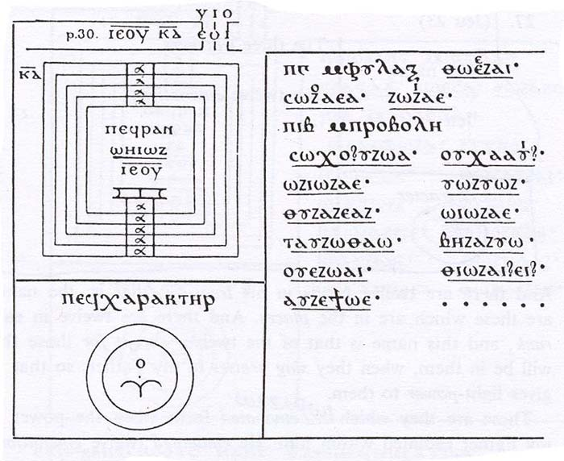
И вот – Двенадцать Глав в его Сокровище, то есть Имена, которые в Местах.
И вот – Двенадцать в каждом Чине, и Имя сие – Имя этих Двенадцати, не считая
тех, которые пребудут в них, когда они будут петь хвалы Отцу моему, чтобы
Он дал им Силу Света.
Это – они, которых эманировал ωηιωζ, когда Сила Отца моего излучалась
в него. Он эманировал Двенадцать Эманаций. И вот – Двенадцать Глав в каждой
Эманации, и Имя сие – Имя этих Двенадцати; и вот – Двенадцать в каждом
из этих Чинов, и они бесконечно пребывают друг за другом, а вот – их Имена,
не считая их Смотрителей. Вот – Трое Смотрителей: ειξασ αωηαζ θωζαι
29.
(31) (рис. 30)
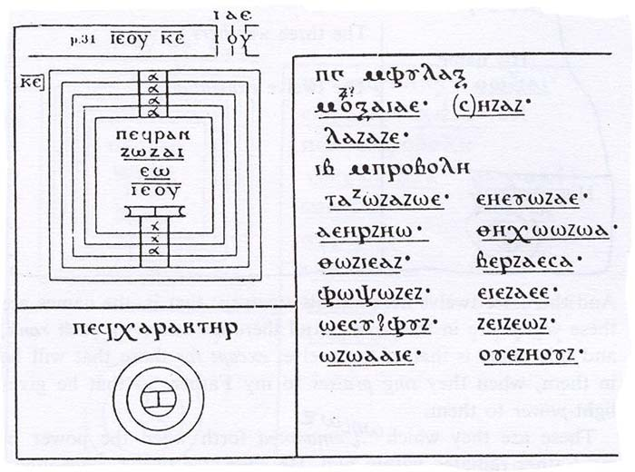
И вот – Двенадцать Глав в его Сокровище, то есть Имена, которые в Местах.
И вот – Двенадцать в каждом Чине, и Имя сие – Имя этих Двенадцати, не считая
тех, которые пребудут в них, когда они будут петь хвалы Отцу моему, чтобы
Он дал им Силу Света.
Это – они, которых эманировал ζоζαιεω, когда Сила Отца моего излучалась
в него. Он эманировал Двенадцать Эманаций. И вот – Двенадцать Глав в каждой
Эманации, и Имя сие – Имя этих Двенадцати; и вот – Двенадцать в каждом
из Чинов, и они бесконечно пребывают друг за другом, а вот – их Имена,
не считая их Смотрителей. Вот – Трое Смотрителей: δαυζαε оυεζ(ζ?α) θωζωεα
30.
(32) (рис. 31)
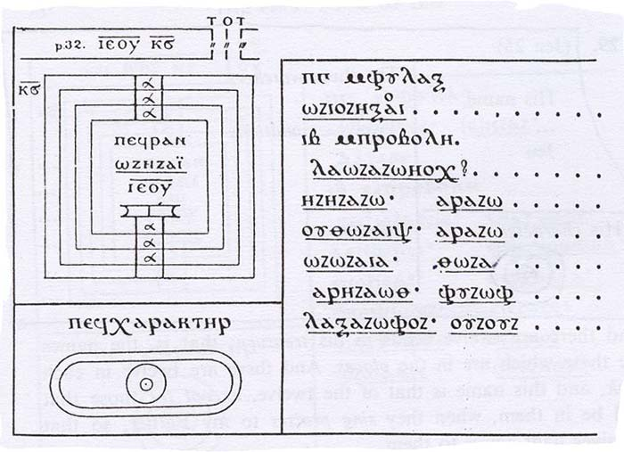
И вот – Двенадцать Глав в его Сокровище, то есть Имена, которые в Местах.
И вот - Двенадцать в каждом Чине, и Имя сие – Имя этих Двенадцати, не считая
тех, которые пребудут в них, когда они будут петь хвалы Отцу моему, чтобы
Он дал им Силу Света.
Это – они, которых эманировал ωζηζαι, когда Сила Отца моего излучалась
в него. Он эманировал Двенадцать Эманаций. И вот – Двенадцать Глав в каждой
Эманации, и Имя сие – Имя этих Двенадцати; и вот – Двенадцать в каждом
из Чинов, и они бесконечно окружают друг друга, а вот – их Имена, не считая
их Смотрителей. Вот – Трое Смотрителей: α?υ?σαε αηζεαι оυρσαζασ
31.
(33) (рис. 32)
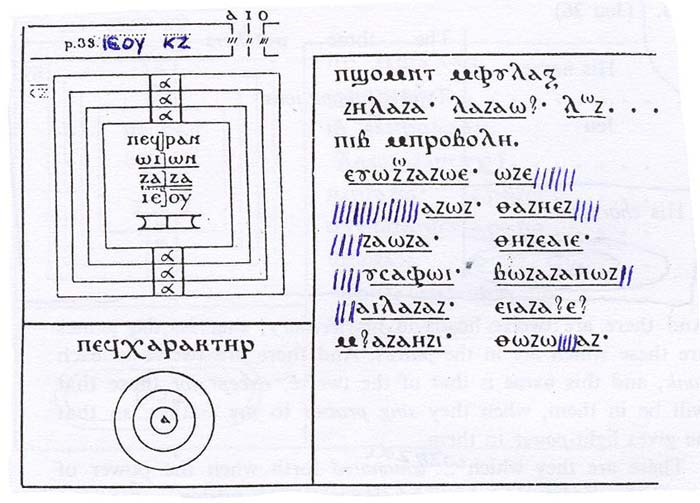
И вот – Двенадцать Глав в его Сокровище, то есть Имена, которые в Местах.
И вот – Двенадцать в каждом Чине, и Имя сие – Имя этих Двенадцати, не считая
тех, которые пребудут в них, когда они будут петь хвалы Отцу моему, чтобы
Он дал им Силу Света.
Это – они, которых эманировал ωιωνζαζα, когда Сила Отца моего излучалась
в нем. Он эманировал Двенадцать Эманаций. И вот – Двенадцать Глав в каждой
Эманации, и Имя сие – Имя этих Двенадцати; и вот – Двенадцать в каждом
из Чинов, и они бесконечно пребывают друг за другом, а вот – их Имена,
не считая их Смотрителей. Вот – Трое Смотрителей: [...]ραζαιναλαμηι
32.
(34) (рис. 33)
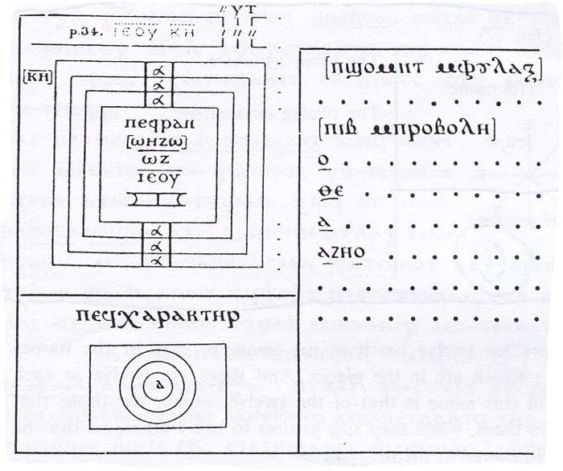
И вот – Двенадцать Глав в его Сокровище, то есть Имена, которые в Местах.
И вот – Двенадцать в каждом Чине, и Имя сие – Имя этих Двенадцати, не считая
тех, которые пребудут в них, когда они будут петь хвалы Отцу моему, чтобы
Он дал им Силу Света.
Это – они, которых эманировал ωηζωωζ, когда Сила Отца моего излучалась
в нем. Он эманировал Двенадцать Эманаций. И вот – Двенадцать Глав в каждой
Эманации, и Имя сие – Имя этих Двенадцати; и вот – Двенадцать в каждом
из Чинов, и они бесконечно окружают друг друга, а вот – их Имена, не считая
их Смотрителей. Вот – Трое Смотрителей: ωιεσαζ θωζα?εε ωζ?ζυ[...]
(35)
(Фрагмент гностического гимна).
(6 строк утрачено)...
[Услышь же меня, поющего хвалы Тебе, Первая Тайна, светившая в Его Тайне,
побудившая Иеу установить Пятый Эон и породившая Архонтов, и Деканов, и
Литургов] в Пятом Эоне, чье бессмертное Имя таково: ψαμαζαζ. Спаси же все
мои члены, бывшие разбросанными21 со времен основания
мира по всем Архонтам, и Деканам, и Литургам22 Пятого
Эона, и собери их всех вместе и возьми их всех к Свету . >>
Услышь же меня, поющего хвалы Тебе, Первая Тайна, светившая в Его Тайне,
побудившая Иеу установить Шестой Эон и породившая Архонтов, и Деканов,
и Литургов в Шестом Эоне, чье бессмертное Имя таково: ζαоυζα. Спаси же
все мои члены, бывшие разбросанными со времен основания мира в Архонтах,
и в Деканах, и в Литургах Шестого Эона; собери их всех вместе и возьми
их к Свету . >>
Услышь же меня, поющего хвалы Тебе, Первая Тайна, светившая в Его Тайне,
побудившая Иеу установить Седьмой Эон, и породившая Архонтов, и Деканов,
и Литургов в Седьмом Эоне, чье бессмертное Имя таково: χαζαβραωζα. Спаси
же все мои члены, бывшие разбросанными со времен основания мира в Архонтах,
и Деканах, и Литургах Седьмого Эона; собери их всех вместе и возьми их
к Свету . >>
Услышь же меня, поющего хвалы Тебе, Первая Тайна, светившая в Его Тайне,
побудившая Иеу установить Восьмой (36) Эон, и породившая Архонтов, и Деканов,
и Литургов в Восьмом Эоне, чье бессмертное Имя таково: βαναζα[...]. Спаси
же все мои члены, бывшие разбросанными со времен основания мира в Архонтах,
и Деканах, и Литургах Восьмого Эона; собери их всех вместе и возьми их
к Свету . >>
Услышь же меня, поющего хвалы Тебе, Первая Тайна, светившая в Его Тайне,
побудившая Иеу установить Девятый Эон, и породившая Архонтов, и Деканов,
и Литургов в Девятом Эоне, чье бессмертное Имя таково: βαζαωζα. Спаси же
все мои члены, бывшие разбросанными со времен основания (мира) в Архонтах,
и Деканах, и Литургах Девятого Эона; собери их всех вместе и возьми их
к Свету . >>
Услышь же меня, поющего хвалы Тебе, Первая Тайна, светившая в Его Тайне,
побудившая Иеу установить Десятый Эон, и породившая Архонтов, и Деканов,
и Литургов в Десятом Эоне, чье бессмертное Имя таково: τανоυαζ. Спаси же
все мои члены, бывшие разбросанными со времен основания (мира) в Архонтах,
и Деканах, и Литургах Десятого Эона; собери их всех вместе и возьми их
к Свету . >>
Услышь же меня, поющего хвалы Тебе, Первая Тайна, светившая в Его Тайне,
побудившая Иеу установить Одиннадцатый Эон, и породившая Архонтов, и Деканов,
и Литургов в Одиннадцатом Эоне, чье бессмертное Имя таково: πλоυζααα. (37)
Спаси же все мои члены, бывшие разбросанными со времен основания (мира)
в Архонтах, и Деканах, и Литургах Одиннадцатого Эона; собери их всех вместе
и возьми их к
Свету . >>
Услышь же меня, поющего хвалы Тебе, Первая Тайна, светившая в Его Тайне,
побудившая Иеу установить Двенадцатый Эон23, и породившая
Архонтов, и Деканов, и Литургов в Двенадцатом Эоне, чье бессмертное Имя
таково: παρναζα. Спаси же все мои члены, бывшие разбросанными со времен
основания (мира) в Архонтах, и Деканах, и Литургах Двенадцатого Эона; собери
их всех вместе и возьми их к Свету . >>
Услышь же меня, поющего хвалы Тебе, Первая Тайна, светившая в Его Тайне,
побудившая Иеу установить Место Двадцати Четырех Невидимых Эманаций, с
их Архонтами, и их Богами, и их Господами, и их Архангелами, и их Ангелами24,
и их Деканами, и их Литургами, в Чине Тринадцатого Эона, чье бессмертное
Имя таково: ωαζαναζαω. Спаси же все мои члены, бывшие разбросанными со
времен основания мира (38) в Двадцати Четырех Невидимых Эманациях, и их
Архонтах, и их Богах, и их Господах, и их Архангелах, и их Ангелах, и их
Деканах, и их Литургах; и собери их всех вместе и возьми их к Свету .
>>
Услышь же меня, поющего хвалы Тебе, Первая Тайна, светившая в Его Тайне
и установившая Тринадцатый Эон и породившая Трех Богов и Невидимого в Тринадцатом
Эоне, чье бессмертное Имя таково: λαζαζααα. Спаси же все мои члены, бывшие
разбросанными в Трех Богах и в Невидимом, и собери их всех вместе и возьми
их к Свету . >>
Услышь же меня, поющего хвалы Тебе, Первая Тайна, светившая в Его Тайне
и установившая всех Архонтов вместе с Иабраофом25, уверовавшая
в Место Чистого Воздуха26, чье бессмертное Имя таково:
χαχαζαωραζα. Спаси же все мои члены, бывшие разбросанными со времен основания
мира во всех Архонтах, и Деканах, и Литургах, и собери их всех вместе и
возьми их к Свету. Аминь. Аминь. Аминь.
33.
(5 строк утеряно)...
... [шесть Мест окружают Его] (39) (в середине которого находится) [криптограмма
- рис. 35 крипт.].
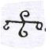
Когда вы придете в это Место, опечатайте себя этой Печатью27
(рис. 34):
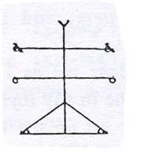
Таково ее Имя: ζαιεωχαζ, тогда как Шифр28 - 70331
(?) - в ваших руках. Кроме того, трижды
назовите это Имя: ααιωεωαζ , и отступят Смотрители
и Покровы29, когда вы будете следовать в
Место Отца их и Он даст (вам свою Печать и свое Имя30)
и вы проследуете через (Врата в Сокровище Его31). Вот
таково расположение этого Сокровища."
Мы, опять же, вышли к Пятьдесят (Шестому) Сокровищу32,
(то есть) я и (Чин мой, окружающий меня). Ученики же Иисуса сказали ему:
"Каков же Шифр Чина Отцовства именно того, к которому мы пришли?" Он же
сказал: "Это - Второй Чин Сокровища Внешних (Частей). А вот - Два Чина
Отцовства Внутренних (Частей) , и один (Чин) - в Середине, и два - вне
(ее). Вот посему узрите же, мы вышли к Двум [Чинам] Внешних (Частей), тогда
как Пять Чинов Отцовства - в Середине, которые пребывают в Местах Бога,
который посреди Всего. Посему и поместил я Два (Чина) во Внешних (Частях),
а два - во Внутренних (Частях), тогда как их Подобие снова внутри всех.
Но когда я распространял их, я поместил два (Чина) вовне, а два - внутри,
а одно - в самом сердце моем (?). Таково основание сих Чинов Отцовства
в этих Местах.
[Я же сказал]: "Вот послушайте о расположении этого Сокровища.
Когда вы придете к этому Сокровищу, опечатайте себя этой Печатью, которая
такова (рис. 36):
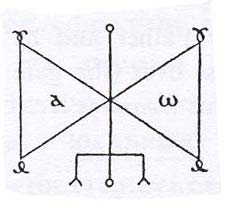
Вот ее Имя: ζωξαεζωζ. Назовите его
только однажды, держа Шифр - 600515
(?) - в ваших руках, и трижды
назовите это Имя - ωωιεηζαζαμαζα,
(40) и Смотрители, и Чины, и Покровы отступят, когда пойдете вы к Месту
Отца их (и Он даст вам свою Печать и свое Имя), когда вы проследуете к
(Вратам в Сокровище Его). Вот таково расположение Сокровища сего и всех,
кто внутри него."
34.
Мы, опять же, вышли к Пятьдесят Шестому Сокровищу - ηειωωζζιоα; я и Чин
мой, окружающий меня. Я же сказал: "Слушайте же о расположении Сокровища
сего и всех, кто внутри него. Шесть Мест окружают его, (в сердцевине которого
- ...33). Когда вы придете к этому Месту, опечатайте
себя вот этой Печатью (рис. 37):
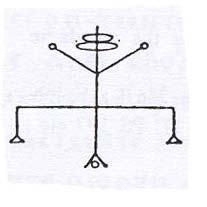
Вот ее Имя. Назовите еголишьоднажды: ζωαζεоυε,
держа сей Шифр - 90410 (?) - в ваших руках,
и назовите данное Имя: оυειεζωαζ трижды, и Смотрители,
и Чины, и Покровы отступят,
когдавы пойдете к Месту их Отца и Он (даст вам свою Печать и свое
Имя - ...34), и вы пройдете во (Врата, в Сокровище Его
- ...35). Вот таково расположение Сокровища сего."
35.
Мы, опять же, вышли к Пятьдесят Седьмому Сокровищу, я и мой Чин, (окружающий
меня - ...36). Мы пришли к Месту оιωζωω, и я сказал:
"Вот теперь послушайте о его распространении и обо всем, что внутри него.
Шесть Мест окружают его. Когда вы придете к этому Месту, опечатайте себя
такой Печатью (рис. 39):
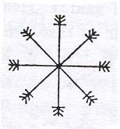
Вот Имя ее:
ιεαζωηηζασαεζ Назовите его
лишь однажды, держа этот Шифр - 90419 (?) - в
ваших руках, а также трижды назовите лишь вот это Имя: ζωζωζω ιεηζωα
и Смотрители, и Чины, и Покровы отступят, когда вы пойдете к Отцу их, и
Он даст (вам свою Печать и Имя свое - ...37), и вы пройдете
через (Врата в Сокровище сие -...38). Вот таково расположение
Сокровища сего и тех, кто внутри него."
36.
(41) Мы, опять же, вышли к Пятьдесят Восьмому Сокровищу εωζεωζα,
я (и Чин мой, окружающий меня)39. Я сказал: "Вот теперь
послушайте о расположении Сокровища сего и всех, кто в нем. Шесть Мест
окружают его. Когда вы придете к этому Месту, опечатайте себя этой Печатью
(рис. 40):
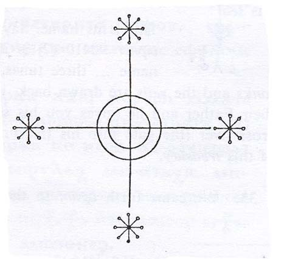
Вот Имя ее: ζααιυζωαζ. Назовите его лишь однажды, держа Шифр сей - 70122
(?) - в ваших руках, а еще трижды назовите такое Имя: εεεειεη ζηωζααιζε,
и Смотрители, и Чины, и Покровы отступят, когда пойдете вы к Месту Отца
их, и Он даст (вам свою Печать и свое Имя)40, и
вы пройдете через (Врата в Сокровище сие)41.
Вот таково расположение Сокровища сего и всех тех, кто внутри него."
37.
Мы, опять же, вышли к Пятьдесят Девятому Сокровищу оυιηζαζωη, я (и Чин
мой, окружающий меня42. Я сказал): "Вот теперь послушайте о расположении
Сокровища сего и всего, что внутри него. Шесть Мест окружает его, (в сердцевине
которого пребывает ...43). Когда вы придете к этому Месту, опечатайте себя
такой Печатью, которая такова (рис. 41):
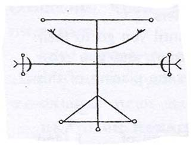
Таково ее Имя:
ζηηαωεζωαζ. Назовите его лишь однажды, держа Шифр сей
- 90187 (?) - в ваших руках. Затем трижды призовите это Имя: ζωооιυωηζα,
и Смотрители, и Чины, и Покровы отступят, когда вы пойдете к Месту
Отца их и Он даст (вам свою Печать и Имя свое), и вы пройдете через (Врата
в Сокровище Его). Вот таково расположение этого Сокровища."
38.
Мы, опять же, вышли к Шестидесятому Сокровищу44
ωαζαηζω,
(42), я (и мой Чин, окружающий меня). Я сказал ученикам своим: "Слушайте
о расположении сего Сокровища. Шесть Мест окружают его, в сердцевине же
его пребывает ωαζαηζо. Те же две линии, что нарисованы ниже Мест его, таковы:
...45, они - Корень его Мест, в которых стоит он. Эти
две линии, в которых эти Альфы данного Типа - две вверху и две внизу -
они также будут прямыми путями (вашими), когда направитесь вы в Присутствие
Отца, в Место Его и во Внутренние (Части) Его. Эти Альфы также суть Покровы,
расстеленные пред Ним. Более того, в его Сокровище есть Двенадцать Мест,
и Двенадцать Глав в каждом Месте, чье Имя - Имя Двенадцати. И в его Сокровище
есть Двенадцать Чинов, и в этом Сокровище будет еще множество Чинов помимо
них. И они поставят Главу, чтобы править ими, названную Первой Заповедью
и Первой Тайной46. Более того, в этом Сокровище
есть только одни Врата. Более того, в нем (в Сокровище) есть Трое Врат
в качестве его Внешней (Части) от Внешних (Частей). И за ними - Девять
Смотрителей, по трое на каждые Врата, и Имя каждого из них неповторимо.
Ну вот, когда пойдете в это Место, опечатайте себя этой Печатью, которая
вот она, а вот Имя ее:
ξαφαζαζωαη. Произнесите его лишь однажды, держа
Шифр его - 30885 (?) - в ваших руках, (43) Печать же такова (рис. 43):
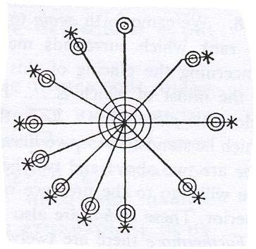
Снова трижды назовите это Имя - ηηζоμαζαζωαλαωζαηζ. И Чины, и Покровы
отступят, когда вы пойдете в Место Отца и Он даст (вам свою Печать и свое
Имя), и вы пойдете во Внутренние (Части), пока не достигнете Врат
внутри Сокровища Его. И эти Смотрители узрят Печать Отца их, и они отступят, ибо распознают ее, когда вы пойдете в Место
Внутренних (Частей Сокровища). Вот таково расположение этого Сокровища
и тех, кто во Внутренних (Частях) его, не считая тех, кто будет
во Внутренних (Частях) его.
Узрите же, я только что поведал вам о расположении всех Сокровищ со
всеми, кто пребудет в них от Сокровища Бога Истины, чье Имя таково: ιоαιεωθωυιχωλμιω,
также как Сокровища
νωαζαηζω. Узрите же, я только что поведал вам о расположении
их всех, за исключением тех, кто пребудет в них во всех, когда будут они
петь хвалы Отцу моему, чтобы Он дал им Силу Света."
39.
Тогда ученики Иисуса сказали ему: "Господь наш, почему же все Места сии
начали быть, и почему Отцовства сии, которые в них, начали быть, и почему
все Чины их начали быть, и почему всех нас породили?"
Иисус же ответил им: "Они начали быть из-за Малой Мысли; (44) Отец мой
опередил ее и не приблизил ее к себе. (Но) Он приблизил всё к себе из-за
этой Малой Мысли, которую он опередил и не приблизил ее к себе. Я же излучался
в эту Малую Мысль как произошедшую от Отца моего. Я испарился и вытек из
нее. Я излучался из нее. Она эманировала меня, и я был Первой Эманацией
изнутри ее. И я был Целым Подобием и Образом ее. Так как она эманировала
меня, я остался в Присутствии ее.
И вновь излучалась сия Малая Мысль. Она испустила еще один Глас47,
который суть Второй Глас. А затем она сделалась всеми этими Местами, то
есть Второй Эманацией.
И вновь (Вторая Эманация) продолжала раз за разом, и сделалась всеми
этими Местами, начавшими быть.
И вновь (сия Мысль) испустила Третий Глас48. Она побудила
(эту Эманацию) сдвинуть Силу Сокровищ. Она побудила все эти Главы начать
быть согласно Местам. Они же встали согласно всем Местам, от первого до
последнего из них из всех. Более того, Отец мой сместил также все эти Главы.
Он вынудил эманировать каждую из Двенадцати Эманаций. Он распространил
их во всех этих Местах Сокровищ, от первого до последнего из всех.
Самих же вас, ученики мои, я понес в Места тех, кто во Внутренних (Частях),
ибо вы - Чин, дабы вы продолжали быть со мной во всех Местах, в которые
пойдем мы, чтобы вы служили мне во всех (45) Местах, куда пойду я, и я
назову вас учениками.
Вот теперь, когда вы выйдете из всех этих Мест, назовите эти Имена,
которые я сказал вам, с Печатями их, чтобы вас опечатали ими. И назовите
Имена (их) Печатей, поскольку Шифр их - в ваших руках, а Смотрители, и
Чины, и Покровы отступили, когда шли вы в Место Отца их. Вновь пройдете
вы через них всех в Места тех, кто от Внутренних (Частей), когда пойдете
вы в Место Бога Истины. Вот таково всё расположение Сокровищ, которое я
только что описал для вас.
40.
Тогда ученики Христа сказали ему: "Господи, когда мы говорили тебе: Дай
нам только то Имя, которого достаточно для всех Мест, то ты сказал
нам: Когда закончу я показывать вам все Места, я скажу вам его.
Узри же, мы видели их всех, и всех тех, кто внутри них. И ты сообщил нам
их Имена, и Имя Печатей их, и все их Шифры, чтобы отступили все их Места
от первого до последнего. Вот теперь дай нам то Имя, о котором ты говорил
нам: Когда закончу показывать вам Сокровища, тогда я скажу вам его.
Вот теперь, Господь наш, скажи его нам, чтобы мы могли поведать его во
всех Местах Сокровищ, и они бы отступили от первого до последнего из всех
из них."
Тогда Иисус сказал им: "Слушайте же, и я скажу его вам, чтобы вы могли
возложить его в сердца ваши и хранить его."
(46)Тогда они сказали ему: "Не это ли Великое Имя Отца твоего, Сущего
от начала?"
Христос же сказал: "Нет, но когда вы назвали Имя Великой Силы, пребывающей
во всех Местах, всех Местах, которые в Сокровищах от первого до последнего
из всех них, также как (Имя?) Сокровища Бога Истины, (они) отступили. Вот
то Имя, которое произнесли вы: ααα ωωω ζεζωραζαζζζαιεωζαζα εεε ιιι ζαιεωζωαχωε ооо υυυ θωηζαоζαεζ ηηη
ζζηηζαоζα. χωζαλχευδ τυξαα(λ)ε(θυ)χ. Вот таково
Имя, которое вы бы назвали, находясь в Месте тех, кто от Внутренних (Частей),
в Месте Бога Истины, тем, кто в Местах Внешних (Частей). Оставайтесь же
в Месте тех, кто от Внешних (Частей) и призывайте его, и опечатайте себя
вот этой Печатью, которая такова (рис. 44):
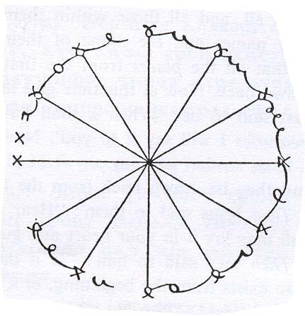
Таково Имя ее:
ζζηηωωχαααηζαζα. Назовите его первым, прежде всего. Держите
сей Шифр - 1856
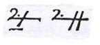
- в ваших руках. Когда же захотите призвать его, назовите его первым.
Затем обернитесь к Четырем Углам Сокровища, в которых находитесь. Опечатайте
себя этой Печатью, и назовите Имя сие тогда, когда этот
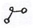
Шифр в ваших руках. Затем также лишь еще один раз назовите Имя сие,
и, (47) призывая его, обернитесь к Четырем Углам Сокровища, в котором находитесь.
Когда же закончите призывать его, скажите: "Да отступят Смотрители Шестидесяти
Сокровищ Внутренних (Частей) и Внешних (Частей) в бесконечной (последовательности),
и все Чины (Сокровищ), и Покровы (Сокровищ), и Места Прямых Путей их Всецелого
Отцовства, когда иду я в Место Бога Истины. Ибо призывал я Великое Имя,
которое Бог всех Мест всех Сокровищ назвал нам." В тот момент, когда вы
назовете Имя сие и, эти слова, и эту Тайну, и обернетесь к Четырем Углам49
Сокровища, или же когда вы пребудете в Месте, в котором находитесь, то
Смотрители Врат, и Чины Сокровищ, и их Покровы, отступившие пред этими
(Отцами), все отступят от Внутренних (Частей к Внешним Частям) их всех,
от первого до последнего из них всех. Они отступят в своих собственных
Подобиях, когда вы переправитесь в Места всех Сокровищ, когда проследуете
вы в Место Бога Истины, который вне Мест Отца моего.
Узрите же, я назвал вам Имя, о котором я говорил вам сперва, что я назову
его вам, когда отступят все Места Сокровищ, а вы пойдете в Место Бога Истины,
которое вне Мест Отца моего.
Теперь узрите, я говорил вам: будьте осторожны и не называйте его продолжительно,
дабы не возбудились все Места из-за Величия его, заключенного в Нем.
Теперь же узрите, что я говорил вам о Двенадцати, окружающих меня, вместе
с (48) Печатью и Шифром.
Узрите же, я называл вам Имя, о котором вы спрашивали меня, чтобы вы
поместили его в сердцах ваших."
41.
Но когда закончил он говорить им это, он сказал им, стоя в Сокровище тех,
кто от Внутренних (Частей): "Следуйте за мною", после чего они проследовали
за ним. Он же углубился в Сокровища и вошел в Седьмое Сокровище Внутренних
(Частей). Он остановился в этом Месте.
И сказал он им, Двенадцати сим: "Обступите меня, вы все", после чего
все они обступили его. Он же сказал им: "Внемлите мне и пойте славу вместе
со мной, когда восславлю я Отца моего из-за распространения всех Сокровищ".
После чего он начал петь хвалы, славя Отца своего и говоря так:
"Славлю Тебя, Тебя, того, чье Великое Имя - Отец, чьи Знамения такого
Типа: ...50 Ибо (когда) Ты полностью замкнут на себе
в Истине, когда даешь приют Малой Мысли, не приближая ее к себе, не в том
ли воля Твоя, Недостижимый Бог?"
Затем он велел ученикам своим трижды ответить: "Аминь, Аминь, Аминь".
И он сказал им еще раз: "Повторяйте за мною, говоря "Аминь" согласно каждому
прославлению".
И вновь он сказал: "Пою я хвалу Тебе, Боже, Отец мой, ибо именно Ты
позволил Малой Мысли сей светить внутрь себя, не так ли, (49), Недостижимый
Бог?"
Тогда трижды изрекли они: "(Аминь, Аминь, Аминь)51".
Тогда сказал он: "Пою Тебе хвалу, Недостижимый Бог, ибо по собственной
воле своей Ты светил лишь в себя самого, да будет воля Твоя, чтобы и она
(Малая Мысль?) светила, не так ли, Недостижимый Бог?"
Они же вновь изрекли трижды: "(Аминь, Аминь, Аминь)52".
"Пою хвалу Тебе, Недостижимый Бог, ибо по воле Твоей я светился в Тебе,
будучи Единственной Эманацией. Я изливался из Тебя. Не так ли, теперь воля
Твоя, чтобы все вещи начали быть, о, Недостижимый Бог?"
Тогда трижды отвечали они: "(Аминь, Аминь, Аминь)53,
Недостижимый Бог".
"Пою Тебе хвалу, (Недостижимый Бог)54, ибо Ты эманировал
меня как Единственную Эманацию. Не так ли, теперь будет воля Твоя для того,
чтобы всё это начало быть, о, (Недостижимый Бог)55?"
Тогда трижды отвечали они: "Аминь, Аминь, Аминь, (Недостижимый Бог)56".
"Я пою хвалу Тебе, ибо Ты восставил меня в Присутствии Твоем, я же есмь
Целое Подобие Твое и Целый Образ Твой, и ты был доволен мною. Не так ли,
теперь воля Твоя такова, чтобы всё это начало быть, о, (Недостижимый Бог)57?
Тогда трижды отвечали они: "(Аминь, Аминь, Аминь)58,
(Недостижимый Бог)59".
"Я пою хвалу Тебе, (Недостижимый Бог)60, ибо Ты светил
внутрь самого себя. Ты эманировал Вторую Эманацию. Ты распространил ее
на Места, окружавшие Тебя. Не так ли, теперь твоя воля, чтобы всё это начало
быть, о, (Непостижимый Бог)61?
Тогда трижды отвечали они: (50) "(Аминь, Аминь, Аминь)62,
Недостижимый Бог.
"Я пою хвалу Тебе, (Недостижимый Бог)63, ибо Ты светил
внутрь самого себя. Ты эманировал Третью Эманацию, вот она: ее ты заставил
существовать, распространяясь во все эти Места. Не так ли, (Недостижимый
Бог)64, ныне воля Твоя, чтобы всё это начало быть?"
Тогда трижды отвечали они: "(Аминь, Аминь, Аминь)65,
(Недостижимый Бог)".
"Я пою хвалу Тебе, (Недостижимый Бог, ибо Ты светил внутрь) самого себя.
Ты эманировал также и эту Эманацию, и Ты поставил ее над всеми Местами.
Не так ли, (Недостижимый Бог)66?"
Тогда сказали они (трижды: "Аминь, Аминь, Аминь)67,
(Недостижимый Бог")68.
"Я пою хвалу Тебе, (Недостижимый Бог), ибо Ты светился внутри самого
себя. Ты эманировал Имена, Ты дал им Имя - Сокровище. Не так ли, (Недостижимый
Бог) 69?"
Они же сказали: "(Аминь, Аминь, Аминь, Недостижимый Бог)70".
"Я пою хвалу Тебе, ибо Ты светил внутрь самого себя. Ты эманировал Места.
Ты заставил их существовать во всех Сокровищах. Не так ли, теперь Твоя
воля, чтобы всё это начало быть, о, Недостижимый Бог?"
Тогда отвечали они трижды: "(Аминь, Аминь, Аминь)71,
(Недостижимый Бог)72".
"Я пою хвалу Тебе, (Недостижимый Бог)73, ибо Ты сам
светил внутрь себя. Ты эманировал Силу. Она же сместила сии Главы, чтобы
Ты дал Имя "Бог Истины" одной из них. Не так ли, теперь Твоя воля, чтобы
всё это начало быть?"
Тогда отвечали они трижды: "(Аминь, Аминь, Аминь, Недостижимый Бог)74".
"Я пою хвалу Тебе, (Недостижимый Бог)75, ибо Ты сам
светил внутрь себя. Ты эманировал Силу. Она же сместила Бога Истины, чтобы
он сдвинул остальные Эманации, (51) которые над Сокровищами, чтобы они
эманировали прочие Эманации, а Ты бы установил их как Чины в Сокровищах.
Не так ли, теперь будет Твоя воля, чтобы всё это начало быть, о, (Недостижимый
Бог)76?"
Тогда трижды отвечали они: "(Аминь, Аминь, Аминь, Недостижимый Бог)77".
"Я пою хвалу Тебе, Недостижимый Бог, ибо Ты сам светил внутрь себя.
Ты эманировал Эманацию, чтобы она могла создать Смотрителей, связанных
с Сокровищами - от первого до последнего из них из всех. Не так ли, теперь
Твоя воля, чтобы всё это начало быть, о, (Недостижимый Бог)78?"
Они же трижды отвечали: "(Аминь, Аминь, Аминь, Недостижимый Бог)79".
"Я пою хвалу Тебе, (Недостижимый Бог)80, ибо Ты сам
светил внутрь себя. Ты эманировал Эманацию. Ты побудил ее создать Шестьдесят
Эманаций, которые суть эти Отцовства. Ты поставил ее [...] связанную с
Сокровищами от первого до последнего из них из всех. Это именно их Ты назвал
Чинами Пяти Деревьев. Не так ли, теперь Твоя воля, чтобы всё это начало
быть, о, (Недостижимый Бог)81?"
Они же трижды отвечали: "(Аминь, Аминь, Аминь, Недостижимый Бог)82".
Я пою Тебе хвалу, Тебе, Недостижимый Бог, ибо Ты сам светил внутрь себя.
Ты эманировал Великую Силу. Ты сместил ее, чтобы создать Печати. Не так
ли, теперь Твоя воля, чтобы всё это начало быть, о, (Недостижимый Бог)83?".
Тогда отвечали они трижды: "(Аминь, Аминь, Аминь, Недостижимый Бог)84".
Я пою Тебе хвалу, Тебе, (Недостижимый Бог)85, ибо
Ты сам светил внутрь себя. Ты [...] для нас сие Великое Имя, которое и
отдал нам, которое именно то, о котором Ты сказал, что из-за него отступят
все Места. Не так ли, о, (Недостижимый Господь)86?"
Они же трижды отвечали: "(Аминь, Аминь, Аминь, Недостижимый Бог)87".
"Я пою Тебе хвалу, Тебе, Недостижимый Бог, (52) ибо Ты сам светил внутрь
себя. Ты эманировал из себя Тайну. Не так ли, теперь воля Твоя, чтобы всё
это начало быть, о, Недостижимый Бог?"
Они же отвечали: "(Аминь, Аминь, Аминь, Недостижимый Бог)88".
"Я пою Тебе хвалу, Тебе, Недостижимый Бог, ибо Ты сам светил внутрь
себя. Ты эманировал Образ Света. Ты восставил его окружать Тебя, Тебя самого.
Не так ли, теперь воля Твоя, чтобы всё это начало быть, о, (Недостижимый
Бог)89?"
Тогда отвечали они: "(Аминь, Аминь, Аминь, Недостижимый Бог)90".
Я пою Тебе хвалу, Тебе, Недостижимый Бог, в иных Местах этих Великих
Логосов, сопряженных с Тайнами. Ты поместил в них Величие Твое, ибо воля
Твоя снова в том, чтобы Ты был достижим ими. Не так ли, теперь воля Твоя,
чтобы всё это начало быть, о, (Недостижимый Бог)91?"
Тогда отвечали они: "(Аминь, Аминь, Аминь, Недостижимый Бог)92".
Я пою хвалу Тебе, Недостижимый Бог, ибо Ты сам светил внутрь себя. Ты
эманировал Эманацию от начала, чтобы распространить всякие Места. Ты назвал
ее ИЕУ, чтобы они могли стать Царями над ними всеми. Не так ли, теперь
воля Твоя, чтобы всё это начало быть, о, (Недостижимый Бог)93?"
Тогда отвечали они: "(Аминь, Аминь, Аминь, Недостижимый Бог)94".
Я пою Тебе хвалу, Тебе, Недостижимый Бог, ибо Ты сам светил внутрь себя.
Ты эманировал свою собственную Тайну, в которой Ты - Недостижимый Бог в
Логосах. (53) Ты - Недостижимый в них, в этом Великом Логосе, сопряженном
с Тайнами Иеу, Отцом всех Иеу, которым Ты и являешься. Не так ли, теперь
собственная воля Твоя быть достижимым для них - (Твоя), Недостижимый Бог,
достижимый в этом Великом Логосе, сопряженном с Тайнами Иеу, Твоя, величайший
из всех Отцов, о, (Недостижимый Бог)95?"
Тогда отвечали они: "(Аминь, Аминь, Аминь, Недостижимый Бог)96".
"(Я пою хвалу Тебе97, Недостижимый Бог), ибо Ты сам
светил внутрь себя. Ты полностью замкнулся в себе - в Твоем Всецелом Подобии
и в Твоей Целой Мысли. Ты оставил позади Малую Мысль, дабы явить Твое Великие
Богатства и Твое Целое Величие, и Твои Великие Тайны. Не так ли, теперь
воля Твоя, чтобы всё это начало быть, о, (Недостижимый Бог)98?"
Тогда отвечали они: "(Аминь, Аминь, Аминь, Недостижимый Бог)99".
"Я пою Тебе хвалу, Тебе, Отец, сущий от начала, эманировавший сию Малую
Мысль - Корень всех этих Величий. Не так ли, теперь воля Твоя, чтобы всё
это начало быть, о, (Недостижимый Бог)100?"
Тогда отвечали они: "(Ты суть) Недостижимый [...]. Аминь, Аминь, Аминь,
трижды, (Недостижимый Бог)101". >>>>>
* * *
См. Примечания к этой книге Иеу.